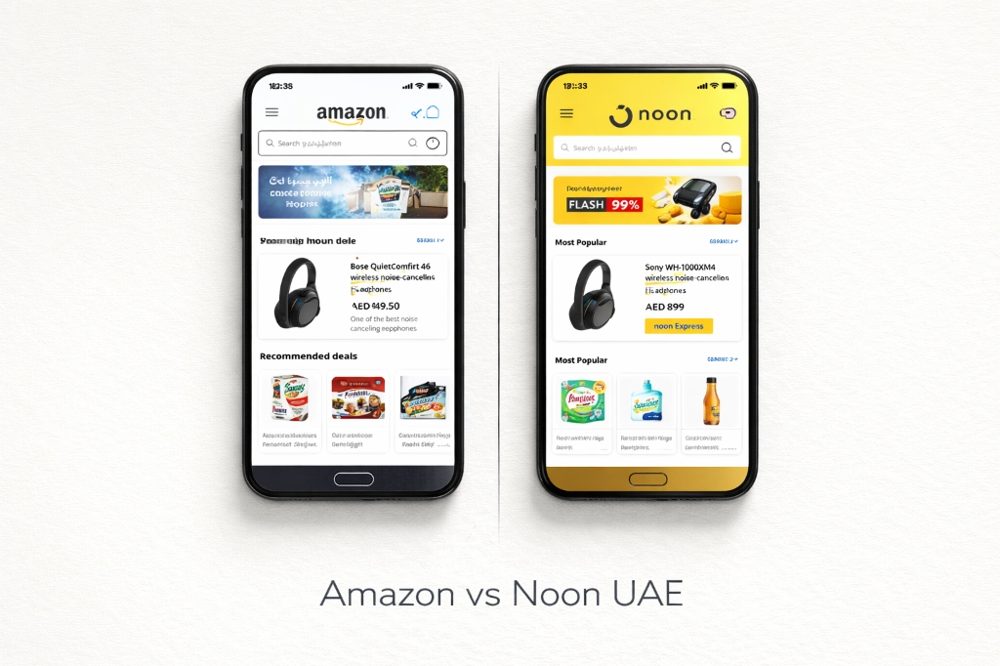

E-commerce Landscape in the UAE
When launching or expanding a retail brand in the Middle East, conducting an analysis of Amazon vs Noon UAE is the primary step for any e-commerce seller. The United Arab Emirates boasts one of the highest internet penetration rates globally, with online retail transitioning from a convenient luxury to an essential daily utility. To win in this lucrative market, merchants must understand the nuances of the region’s two dominant marketplaces.
Amazon.ae (formerly Souq) and Noon.com represent two distinct e-commerce models. Amazon brings its global technical infrastructure, standard FBA logistics, and an internationally recognized brand reputation to the region. Noon, backed by Dubai’s Emaar and Saudi Arabia's Public Investment Fund (PIF), operates with a deeply localized identity, rapid express shipping network, and highly visible regional marketing campaigns. Selecting the right partner dictates a brand's margins, customer support workload, and inventory turnover rate.
Audience Demographics & Reach
Understanding where shoppers spend their time is critical for allocating ad budget and inventory. While both platforms attract massive traffic, their customer demographics exhibit subtle variations:
- Amazon UAE: Attracts a diverse expatriate community, tech buyers, and corporate B2B clients. Shoppers here often search for specific global brands, consumer electronics, and international items. They rely on detailed product reviews and value standard domestic and cross-border shipping reliability.
- Noon UAE: Enjoys strong engagement among GCC nationals and localized demographics. Noon is highly popular for local fashion, beauty products, home essentials, and daily groceries. The user demographic responds heavily to flash sales, yellow-badge promotions, and native Arabic-language content.
Logistics Comparison: FBA vs FBN
Fulfillment infrastructure is the backbone of e-commerce scaling. Both marketplaces offer specialized fulfillment networks designed to handle end-to-end storage, packing, shipping, and returns:
Fulfilled by Amazon (FBA)
Amazon’s logistics system relies on world-class warehouse automation. Sellers send inventory to Amazon's fulfillment centers, and listings automatically receive the Prime badge. This unlocks free next-day delivery for Prime subscribers, premium multi-channel logistics, and robust customer service management. Amazon excels at handling international shipments and maintaining predictable delivery windows across all emirates.
Fulfilled by Noon (FBN)
Noon’s FBN model uses its localized logistics network. Items in Noon warehouses receive the "Noon Express" badge, guaranteeing delivery within 24 hours. FBN is highly optimized for cross-docking and regional distribution. Noon’s delivery fleet is highly visible, providing custom packaging and localized cash-on-delivery (COD) processing, which remains a key payment preference for a segment of regional shoppers.
Fee Structures & Selling Costs
A seller's profitability depends directly on commission schedules, storage costs, and transaction fees. Below is a comparative breakdown of key selling costs for Amazon vs Noon UAE:
| Operational Cost Category | Amazon UAE (.ae) | Noon UAE (Noon.com) |
|---|---|---|
| Monthly Subscription Fee | Free for Individual / 147 AED for Professional | No recurring monthly subscription fee |
| Average Referral Fee Range | 5% to 15% (depending on category) | 4% to 22% (varies by category and sales model) |
| Closing Fees | Fixed fee based on item price brackets | Low transactional service fee per item sold |
| Logistics Badging | Amazon Prime Badge | Noon Express Badge |
| Storage Fees | Calculated per cubic foot (Peak/Off-Peak cycles) | Calculated per cubic meter per day |
While Noon does not charge a fixed monthly subscription fee, its referral fees in specific categories like fashion and lifestyle can be higher than Amazon’s. Sellers must run detailed unit-economic models for each SKU to identify which platform delivers superior net margins.
Seller Support & Backend UI
The operational experience of managing a store involves daily interaction with the backend seller console and partner support staff:
- Seller Central (Amazon): Features a powerful, globally standardized analytics portal. It offers predictive sales forecasting, detailed PPC advertising metrics, and automated listing optimization suggestions. However, navigating brand gating and resolving listing policy violations can be highly automated and rigid.
- Noon Partner Station: Offers a simplified, user-friendly interface optimized for quick inventory updates and promotions setup. Noon provides localized account managers to key brand partners, making it easier to resolve operational issues and participate in exclusive platform-wide marketing campaigns.
Strategic Verdict for Sellers
Ultimately, a successful Middle East e-commerce strategy does not require choosing one platform over the other. The most successful brands employ a dual-channel strategy, listing inventory on both Amazon and Noon to maximize search visibility. However, budget and resource constraints may require prioritization:
If your brand sells global tech, niche industrial goods, or relies on international brand recognition, prioritizing Amazon UAE provides the scale and infrastructure necessary to support growth. If your product catalog centers on fast-moving consumer goods, local fashion, lifestyle, or targets localized regional buyer demographics, starting with Noon UAE will yield rapid initial traction through localized promotions.
Aoura E-commerce Services helps businesses set up, optimize, and manage multi-channel operations across both platforms. From logistics alignment to catalog listing translation, our team ensures your e-commerce operations scale efficiently across the UAE market. For a customized consultation or integration support, contact our corporate relations office at info@aouragrp.com.
Frequently Asked Questions
1. Do I need a local UAE trade license to sell on Amazon and Noon?
Yes, both platforms require a valid trade license (either a mainland or free zone license) to register as a corporate seller. Noon strictly requires a UAE-registered entity, whereas Amazon allows registration for certain international businesses under specific cross-border seller frameworks.
2. Which platform has faster payout cycles?
Amazon UAE typically operates on a 14-day settlement cycle, transferring funds directly to your registered bank account. Noon UAE offers weekly or bi-weekly payouts, depending on your seller tier and backend agreement, which can be advantageous for managing short-term operational cash flow.
3. Can I use a third-party logistics (3PL) provider instead of FBA or FBN?
Yes, both platforms support self-ship or merchant-fulfilled models (easy ship / cross-dock). However, items fulfilled via 3PL will not receive the Prime or Noon Express badge, which can lower listing buy-box visibility and organic search rankings.